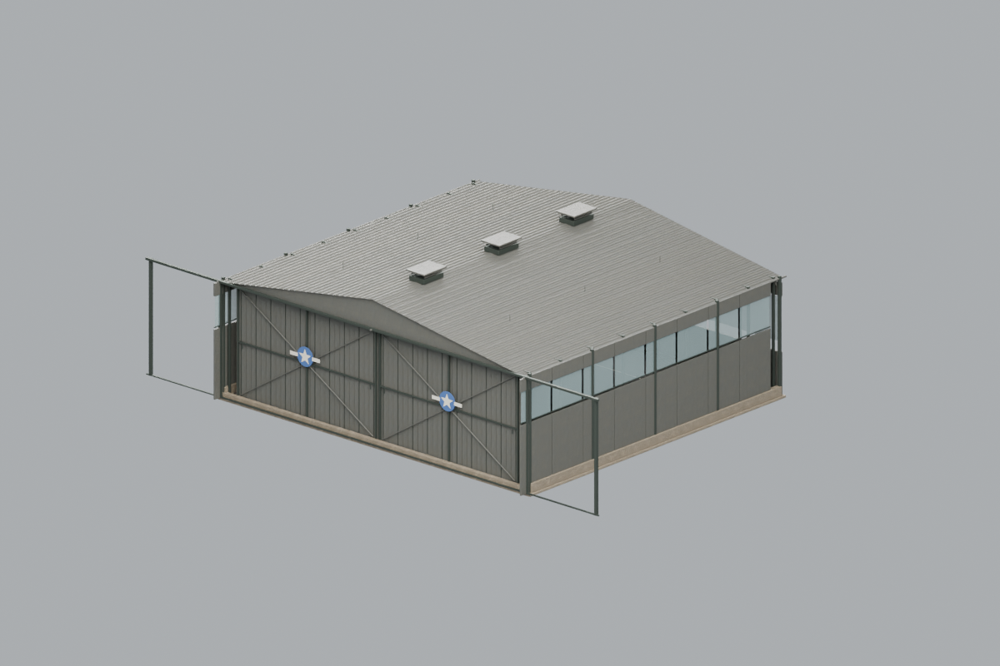
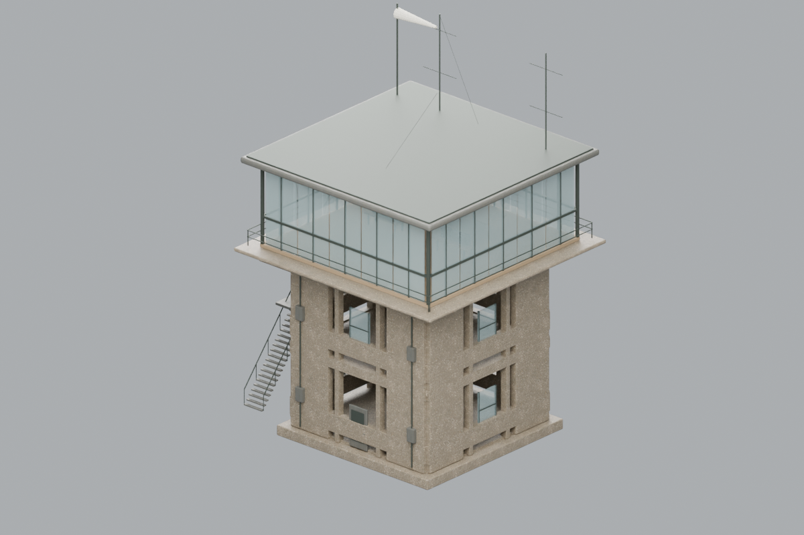

Bekijk de hangar in 3D 90 cm tafelmodel · 4,9 MBBloedjungle Airfield HQ 2.2
Tik op een afbeelding om het model in iPhone Quick Look te draaien. Dit zijn compacte tafelmodellen voor beoordeling. De gamebestanden behouden de echte schaal.

Bekijk de verkeerstoren in 3D 90 cm hoog tafelmodel · 1,9 MB